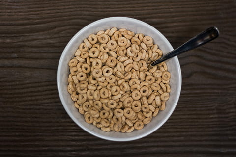

Cheerios With Orange Juice

A Twist On The Classic
Ever craved a bowl of cheerios, but didn't have any milk? If you have orange juice, this recipe will work in a pinch.
Ingredients
- A bowl's worth of cheerios
- 8 fluid ounces orange juice, preferably Florida's Natural
Steps
- Find a clean bowl and spoon. If none are available, just pull some dirties from the dishwasher or sink.
- Pour cheerios into bowl.
- Pour orange juice over cheerios until cheerios rise to edge of bowl.
- Eat with a spoon
- Question your life decisions
Home